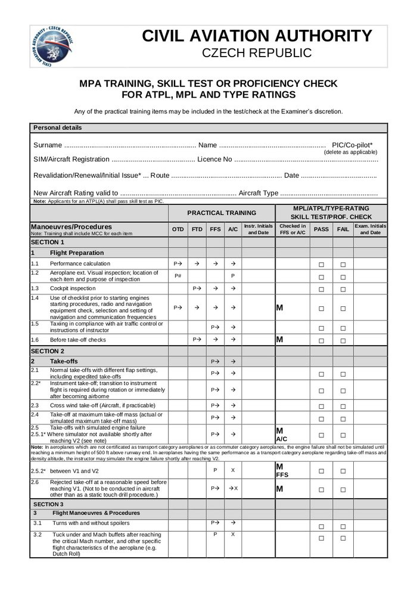
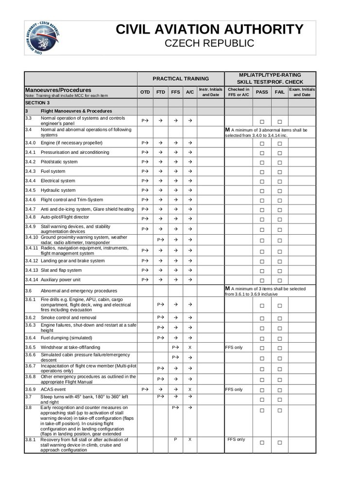
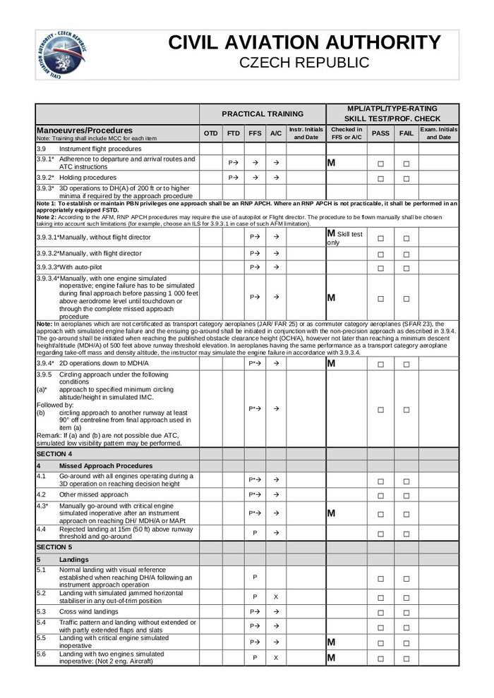
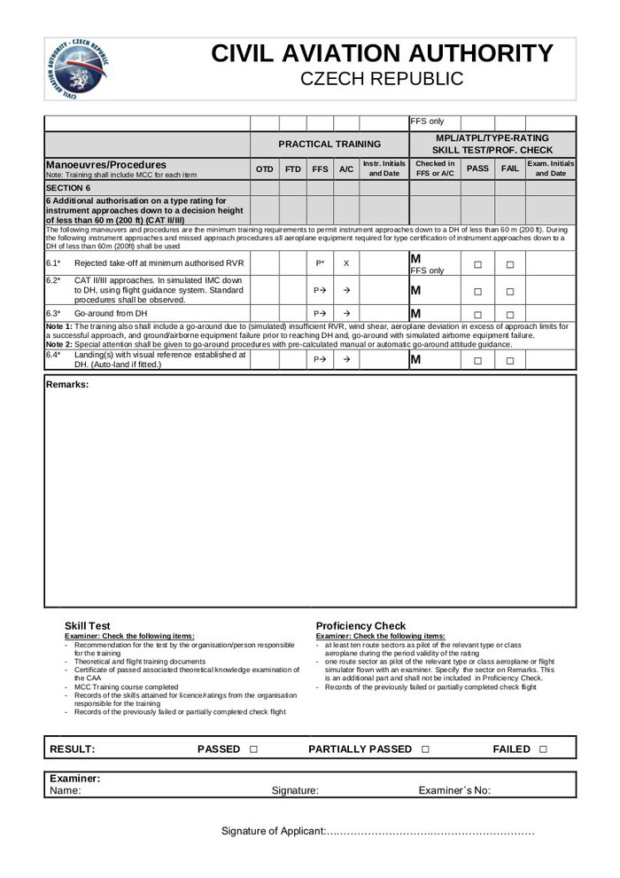

Проверка на симуляторе
Давайте я вам расскажу, как проходит проверка пилота на симуляторе.
Раз в полгода пилот проходит 2 сессии на симуляторе, каждая по 4 часа, которая делится на две части: 2 часа в роли Pilot Flying и 2 часа в роли Pilot Monitoring. На первой сессии идет просто тренировка: вспоминаются и отрабатываются различные отказы. Вторая сессия — уже сама проверка. Я буду описывать как раз вторую часть.
Проверка начинается с брифинга, на котором инструктор/экзаменатор рассказывает откуда и куда мы полетим, какая будет погода, загрузка и вообще все, что связано с полетом. Также на брифинге он может задать теоретические вопросы по системам самолета.
Во время самой сессии нужно выполнить ряд обязательных чеков, вот по ним мы и пройдемся.
М — обязательные (mandatory) пункты проверки 
Чек может выполняться как на различных типах симулятора (OTD, FTD, FFS), сертифицированных под конкретный тип самолета (type rating), так и на самом самолете (A/C). Дешевле всего, конечно, проходить все это на FFS (Full Flight Simulator), но, к примеру, на моем типе C525, можно полетать и на самолете.
1. Подготовка к полету (Flight Preparation)
Тут все просто: расчет масс и скоростей, подготовка и проверка кабины, использование чеклистов, руление по перрону. Такие вещи, как визуальная инспекция самолета можно делать, конечно, только при наличии настоящего самолета, но, как я написал выше, инструктор может спросить и на брифинге (сколько дорожек имеет протектор на основных колесах?)
2. Взлеты (Take–offs). А вот тут начнем подробнее.
2.1. Обычный стандартный взлет, возможно с различными значениями закрылков, включая "ускоренный" взлет. На моем типе взлетать можно с закрылками 15 и 0 (например, после де–айса). На 737, если мне не изменяет память, взлетать можно с закрылками 5 и 1. В зависимости от конфигурации будут разные скорости (V1, Vr, Vref), их нужно правильно посчитать. Ускоренный взлет — это либо rolling take–off, когда выезжают на полосу и, не останавливаясь, выполняют взлет, либо по инструкции диспетчера "cleared for immediate take–off" — тут нужно либо быть готовым и выполнить взлет быстро, иначе борт на посадочной уйдет на второй круг, либо сказать "unable" и никуда не двигаться.
Пункт 2.2 — это просто переход из визуальной части взлета (разбег по полосе) в инструментальный, когда ты смотришь уже только на приборы. Обычно инструкторы сразу после взлета включают туман и смотреть по сторонам все равно не имеет смысла.
Взлет с боковым ветром (2.3) и взлет с максимальной массой (2.4) — все просто, обычно всегда все так и происходит.
Пункт 2.5 и сразу 2.6 уже интересные — взлет с отказом двигателя (вырубился, загорелся, оторвался и т.д.). Отказ может быть до V1 (скорость принятия решения), тогда нужно вдарить по тормозам и остановиться на полосе; сразу после V1, обычно тут главное не ударить по тормозам и продолжить взлет, правильно парируя разницу в возникшем моменте "педалями хвоста"; и даже бывает после Vr (скорость поднятия носовой стойки) — вот тут иногда приходится прерывать взлет если самолет не реагирует на штурвал.

3. Маневры и процедуры (Flight Manoeuvres & Procedures)
3.1. Стандартные повороты и развороты с/без спойлеров. У меня на самолете их нет, на В737 спойлеры "включаются" при повороте штурвала более 7 градусов.
3.2. Полет на максимальной скорости. На моем типе это 0.737М, на 0.742М начинает отрабатывать звуковая сигнализация, где–то на 0.760М симулятор начинает подергиваться. Весь раздел 3.3 и 3.4 это просто стандартное управление системами самолета в их обычном режиме.
Пункт 3.6 уже поинтереснее — это как раз симуляция и отработка отказов различных систем:
3.6.1. Пожар двигателя, вспомогательной силовой установки (APU), пожар в кокпите, в багажном отделении, в салоне и т.д.
3.6.2. Задымление и борьба с ним
3.6.3. Различные отказы двигателей — распознавание и правильное реагирование. Двигатель в полете может просто заглохнуть и по ряду параметров можно определить, что его можно перезапустить. А может быть ситуация серьезнее и "полетела турбина", тогда перезапуск может привести к пожару. А может быть просто повышенная температура ITT/EGT, высокая температура масла, и достаточно просто уменьшить режим.
3.6.4. Сброс топлива — не на всех типах это возможно
3.6.5. Сдвиг ветра на взлете и посадке — я бы сказал, один из самых сложных элементов, даже пожар двигателя не такой страшный, а вот грохнуться в землю или в гору из–за сдвига ветра страшно даже на симуляторе.
3.6.6. Разгерметизация и аварийное снижение — может быть как медленная разгерметизация, которую можно успеть заметить по приборам, так и быстрая (rapid). Тогда происходит бум в кабине, нужно быстро натянуть маски и начать снижение.
3.6.7. "Отключка" одного из пилотов — обычно просто потеря сознания, но в реальной жизни может быть еще и отравление, эпилепсия, либо сам пилот в сознании, но где–то в своей реальности. Инструктор может похлопать по плечу твоего напарника по симулятору, показывая, чтобы он "отключился", тебе же нужно это распознать и принять правильные действия. В прошлый раз я получил от экзаменатора записку "Please be dead"
3.6.8. Другие отказы. Так как самолеты разные, с разными системами, то невозможно все это расписать в форме. Поэтому на усмотрение экзаменатора он может включить тот или иной отказ системы, и даже их комбинацию. Например, на моем типе самая распространенная комбинация: пожар одного двигателя и отказ генератора на другом — в этом случае самолет лишается электроэнергии и есть всего 30 минут на батарейке при минимальном наборе авионики. В принципе, все, что может сломаться на реальном самолете симулируется на тренажере.
3.6.9. Коллизии в воздухе — не столкнуться и правильно среагировать на сигнализацию TCAS.
3.7. "Крутые" повороты и развороты на 360 градусов без автопилота (он так не сможет) и директоров. У некоторых вызывает трудности развернуться на 360 градусов при этом удерживая постоянную скорость и высоту.
3.8. Распознавание сваливания и выходы из него

3.9. Стандартные полеты по приборам. По большей части скукота, когда можно немного отдохнуть, кроме пары пунктов. 3.9.3.1. Заход на руках без директоров 3.9.3.4. Заход на руках с одним отказавшим двигателем. Обычно выполняется в сумме раза 3–4 за всю проверку с хорошим боковым ветром и без директоров.
4. Процедуры по уходу на второй круг (Missed Approach Procedures)
4.1. Уход на второй со всеми работающими двигателями
4.3. Уход на второй на руках (без автопилота, без директоров, возможно даже с отказавшим навигационным дисплеем, который "рисует" тебе маршрут) с одним отказавшим двигателем. Тоже выполняется раза 3–4 за проверку.
5. Приземления
5.1. Обычные стандартные приземления
5.2. Посадка с заблокированным горизонтальным стабилизатором
5.3. Посадка с боковым ветром. Обычно ставят максимальный разрешенный боковик.
5.4. Посадка с нестандартным положением закрылок
5.5. Посадка с одним отказавшим двигателем
5.6. Посадка с двумя отказавшими двигателями. Вообще, этот пункт для трех и более двигательных самолетов, но лично я обычно прошу дополнительно включить этот пункт во время своих полетов на симуляторе.

Секция 6 для полетов в условиях пониженной видимости (CAT II/CAT III). Мой тип не сертифицирован под такие полеты, поэтому я эту проверку не прохожу. Но мы дополнительно отрабатываем взлет при видимости 150 метров. В реальности это выглядит примерно так
В конце проходит де–брифинг, где обсуждается, что пошло не так, что можно было сделать лучше, а что было хорошо.
Вот как–то так проходит чек на симуляторе. Если вам кто–то будет говорить, что пилоты никогда не летали на руках и не отрабатывали уход на второй круг без автопилота — не верьте, все мы летаем, и все отрабатываем.